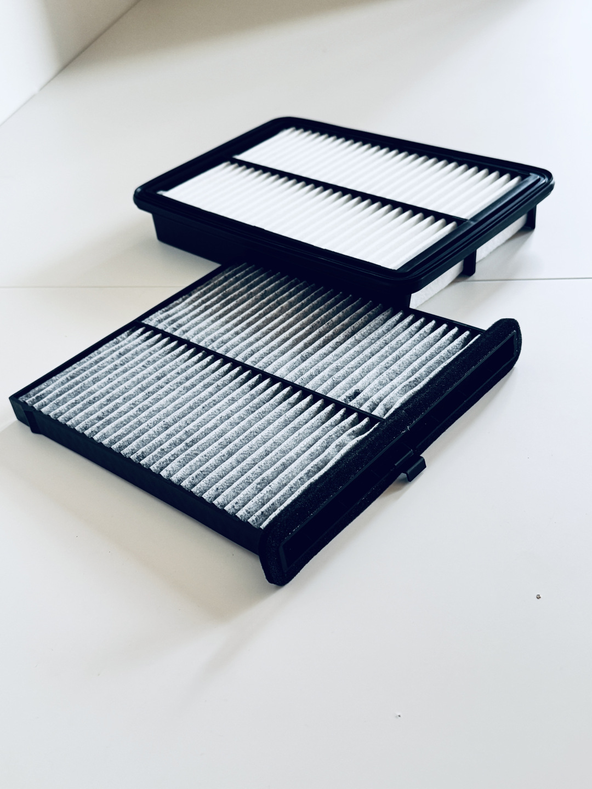

1 × GV-CF-001
Cabin Air Filter
One cabin air filter, with dedicated installation guidance and product support.
Cabin component supportGV-KIT-001 · Air Care System
Cabin & Engine Air Filter Kit
A cabin air filter and an engine air filter, together for routine maintenance of the listed Mazda CX-5 applications.
Complete your purchase on Amazon.
Check vehicle fitment before purchase
What’s inside
One of each filter in a single kit, with fitment information and installation support for both.
1 × GV-CF-001
One cabin air filter, with dedicated installation guidance and product support.
Cabin component support
1 × GV-EF-001
Filter media for incoming engine air. Supplied alongside the cabin filter to keep both replacement components in one kit.
Engine component supportVehicle application
Mazda CX-5 · Naturally aspirated gasoline
| Engine | Model years |
|---|---|
| 2.0L SKYACTIV-G | 2013–2019 |
| 2.5L SKYACTIV-G | 2014–2025 |
Not for Turbo Models.
Installation & Support
Identify the right component, review the instructions and contact us if you need help.
Review the steps for each filter.
Load a video when you’re ready to watch.
Get help with a product or order.
Need assistance? Contact Product Support
Product documentation and a direct conversation with GREXVAN Sales.